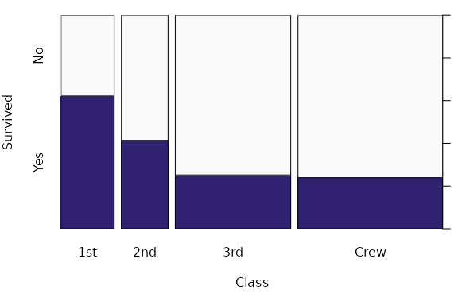
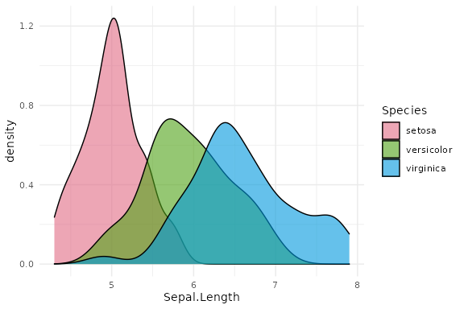
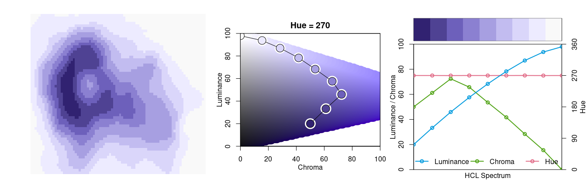

colorspace: A Toolbox for Manipulating and Assessing Colors and Palettes
Achim Zeileis, Jason C. Fisher, Kurt Hornik, Ross Ihaka, Claire D. McWhite, Paul Murrell, Reto Stauffer, Claus O. Wilke
colorspace.RmdOverview
The colorspace package provides a broad toolbox for selecting individual colors or color palettes, manipulating these colors, and employing them in various kinds of visualizations.
At the core of the package there are various utilities for computing with color spaces (as the name of the package conveys). Thus, the package helps to map various three-dimensional representations of color to each other. A particularly important mapping is the one from the perceptually-based and device-independent color model HCL (Hue-Chroma-Luminance) to standard Red-Green-Blue (sRGB) which is the basis for color specifications in many systems based on the corresponding hex codes (e.g., in HTML but also in R). For completeness further standard color models are included as well in the package: polarLUV() (= HCL), LUV(), polarLAB(), LAB(), XYZ(), RGB(), sRGB(), HLS(), HSV().
The HCL space (= polar coordinates in CIELUV) is particularly useful for specifying individual colors and color palettes as its three axes match those of the human visual system very well: Hue (= type of color, dominant wavelength), chroma (= colorfulness), luminance (= brightness).

The colorspace package provides three types of palettes based on the HCL model:
-
Qualitative: Designed for coding categorical information, i.e., where no particular ordering of categories is available and every color should receive the same perceptual weight. Function:
qualitative_hcl(). -
Sequential: Designed for coding ordered/numeric information, i.e., where colors go from high to low (or vice versa). Function:
sequential_hcl(). -
Diverging: Designed for coding ordered/numeric information around a central neutral value, i.e., where colors diverge from neutral to two extremes. Function:
diverging_hcl().
To aid choice and application of these palettes there are: scales for use with ggplot2; shiny (and tcltk) apps for interactive exploration; visualizations of palette properties; accompanying manipulation utilities (like desaturation, lighten/darken, and emulation of color vision deficiencies).
More detailed overviews and examples are provided in the articles:
- Color Spaces: S4 Classes and Utilities
- HCL-Based Color Palettes
- HCL-Based Color Scales for ggplot2
- Palette Visualization and Assessment
- Apps for Choosing Colors and Palettes Interactively
- Color Vision Deficiency Emulation
- Color Manipulation and Utilities
- Approximating Palettes from Other Packages
- Somewhere over the Rainbow
Installation
The stable release version of colorspace is hosted on the Comprehensive R Archive Network (CRAN) at https://CRAN.R-project.org/package=colorspace and can be installed via
install.packages("colorspace")The development version of colorspace is hosted on R-Forge at https://R-Forge.R-project.org/projects/colorspace/ in a Subversion (SVN) repository. It can be installed via
install.packages("colorspace", repos = "https://R-Forge.R-project.org")For Python users a beta re-implementation of the full colorspace package in Python 2/Python 3 is also available, see https://github.com/retostauffer/python-colorspace.
Choosing HCL-based color palettes
The colorspace package ships with a wide range of predefined color palettes, specified through suitable trajectories in the HCL (hue-chroma-luminance) color space. A quick overview can be gained easily with the hcl_palettes() function:
library("colorspace")
hcl_palettes(plot = TRUE)
A suitable vector of colors can be easily computed by specifying the desired number of colors and the palette name (see the plot above), e.g.,
q4 <- qualitative_hcl(4, palette = "Dark 3")
q4## [1] "#E16A86" "#909800" "#00AD9A" "#9183E6"The functions sequential_hcl(), and diverging_hcl() work analogously. Additionally, their hue/chroma/luminance parameters can be modified, thus allowing for easy customization of each palette. Moreover, the choose_palette()/hclwizard() app provide convenient user interfaces to perform palette customization interactively. Finally, even more flexible diverging HCL palettes are provided by divergingx_hcl().
Usage with base graphics
The color vectors returned by the HCL palette functions can usually be passed directly to most base graphics, typically through the col argument. Here, the q4 vector created above is used in a time series display:
plot(log(EuStockMarkets), plot.type = "single", col = q4, lwd = 2)
legend("topleft", colnames(EuStockMarkets), col = q4, lwd = 3, bty = "n")As another example for a sequential palette, we demonstrate how to create a spine plot displaying the proportion of Titanic passengers that survived per class. The Purples 3 palette is used, which is quite similar to the ColorBrewer.org palette Purples. Here, only two colors are employed, yielding a dark purple and a light gray.
ttnc <- margin.table(Titanic, c(1, 4))
spineplot(ttnc, col = sequential_hcl(2, palette = "Purples 3"))
Usage with ggplot2
To provide access to the HCL color palettes from within ggplot2 graphics suitable discrete and/or continuous ggplot2 color scales are provided. The scales are named via the scheme scale_<aesthetic>_<datatype>_<colorscale>(), where <aesthetic> is the name of the aesthetic (fill, color, colour), <datatype> is the type of the variable plotted (discrete or continuous) and <colorscale> sets the type of the color scale used (qualitative, sequential, diverging, divergingx).
To illustrate their usage two simple examples are shown using the qualitative Dark 3 and sequential Purples 3 palettes that were also employed above. For the first example, semi-transparent shaded densities of the sepal length from the iris data are shown, grouped by species.
library("ggplot2")
ggplot(iris, aes(x = Sepal.Length, fill = Species)) + geom_density(alpha = 0.6) +
scale_fill_discrete_qualitative(palette = "Dark 3")
And for the second example the sequential palette is used to code the cut levels in a scatter of price by carat in the diamonds data (or rather a small subsample thereof). The scale function first generates six colors but then drops the first color because the light gray is too light here. (Alternatively, the chroma and luminance parameters could also be tweaked.)
dsamp <- diamonds[1 + 1:1000 * 50, ]
ggplot(dsamp, aes(carat, price, color = cut)) + geom_point() +
scale_color_discrete_sequential(palette = "Purples 3", nmax = 6, order = 2:6)
Palette visualization and assessment
The colorspace package also provides a number of functions that aid visualization and assessment of its palettes.
-
demoplot()can display a palette (with arbitrary number of colors) in a range of typical and somewhat simplified statistical graphics. -
hclplot()converts the colors of a palette to the corresponding hue/chroma/luminance coordinates and displays them in HCL space with one dimension collapsed. The collapsed dimension is the luminance for qualitative palettes and the hue for sequential/diverging palettes. -
specplot()also converts the colors to hue/chroma/luminance coordinates but draws the resulting spectrum in a line plot.
For the qualitative Dark 3 palette from above the following plots can be obtained.
The bar plot is used as a typical application for a qualitative palette (in addition to the time series and density plots used above). The other two displays show that luminance is (almost) constant in the palette while the hue changes linearly along the color “wheel”. Ideally, chroma would have also been constant to completely balance the colors. However, at this luminance the maximum chroma differs across hues so that the palette is fixed up to use less chroma for the yellow and green elements.
Note also that in a bar plot areas are shaded (and not just points or lines) so that lighter colors would be preferable. In the density plot above this was achieved through semi-transparency. Alternatively, luminance could be increased as is done in the "Pastel 1" or "Set 3" palettes.
Subsequently, the same types of assessment are carried out for the sequential "Purples 3" palette as employed above.
s9 <- sequential_hcl(9, "Purples 3")
demoplot(s9, "heatmap")
hclplot(s9)
specplot(s9, type = "o")
Here, a heatmap (based on the well-known Maunga Whau volcano data) is used as a typical application for a sequential palette. The elevation of the volcano is brought out clearly, using dark colors to give emphasis to higher elevations.
The other two displays show that hue is constant in the palette while luminance and chroma vary. Luminance increases monotonically from dark to light (as required for a proper sequential palette). Chroma is triangular-shaped which allows the viewer to better distinguish the middle colors in the palette when compared to a monotonic chroma trajectory.